Does your organization have data intelligence? Can people easily find, understand, and trust data? If not, you'll want to join this lab to learn how Alation ensures people have reliable and trustworthy data to make confident, data-driven decisions.
In this expert-led, hands-on lab, you will follow a step-by-step guide utilizing an Alation-provided sample database of a fictitious TV streaming company, Juno. Using this example data, you will learn how the Alation Data Catalog improves productivity with self-service analytics and uses automation and continuous improvement to manage data governance. See why Alation is Snowflake's 3-time Data Governance Partner of the Year.
During the lab, you'll kickstart your 14-day free trial of Alation — to which you can connect to your own Snowflake environment and continue to explore the data catalog.
- What You'll Learn
- How to create and manage Snowflake access policies directly from Alation
- How to link a data policy to related data assets
- How to protect sensitive data using Snowflake's role-based masking policies
- How to write trusted SQL queries with guided navigation
- How to visualize column-level lineage for impact analysis
- How to explore data quality metrics against critical data assets
- What You'll Need
- A trial Snowflake Account with ACCOUNTADMIN access (optional) or an existing Snowflake accoount (with ACCOUNTADMIN access)
- Alation free trial through Snowflake Partner Connect
- To create a Snowflake trial account, follow this link and fill out the form before clicking Continue. You'll be asked to choose a cloud provider and for the purposes of this workshop any of them will do. After checking the box to agree to the terms, click:
Get Started - Next you will be prompted for the reason you are signing up for a Snowflake trial account. Choose "Virtual hands-on lab or demo" and any other ones that apply. Click:
Submit
1. Access Partner Connect from your Snowflake trial account.

- After you have logged in, access the
Data Productsmenu selection from the left navigation bar. - Then select
Partner Connect - Either type in Alation in the search or scroll down to the Security & Governance section.
 2. Default Objects Created in your Snowflake trial account.
2. Default Objects Created in your Snowflake trial account.
- Click:
Connect
3. Your Partner Connect Account has been Created
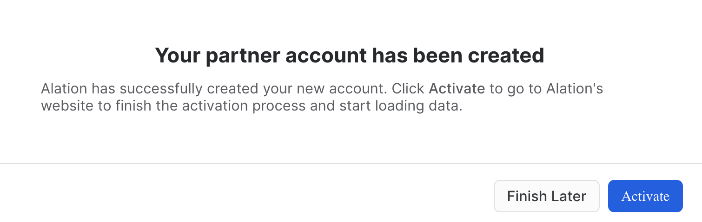
- Click:
Activate
4. Alation Account set up

- The email address that you used for your trial Snowflake account will be used as your Alation user id. This is the reason why this field cannot be edited.
- Provide your password.
- Verify your password.
- Click:
Start Free Trial
5. Getting Started User Information
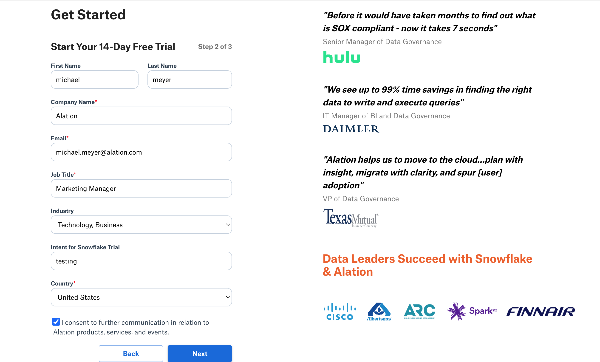
- Provide your information in order to start the trial.
- Note: the business email provided is how Alation will share additional infomation throughout the trial.
- Click:
Next
6. Your Account is Ready

- Your Alation Trial has finished being installed and is ready for use.
- Click:
Log in to Alation Account - Note: you will also receive an email with the Alation URL.
In this Alation Data Intelligence Platform lab, you can expect to see how the platform helps to solve problems for roles ranging from business analysts to data engineers. Each section will have discussion points along with exercises to help reinforce each topic.
Let's get started!
1. Log into Alation website.
Access the URL provided for your Alation trial in your preferred browser, like Chrome.
2. On the home page scroll down to the bottom and click on Data Governance and Quality.
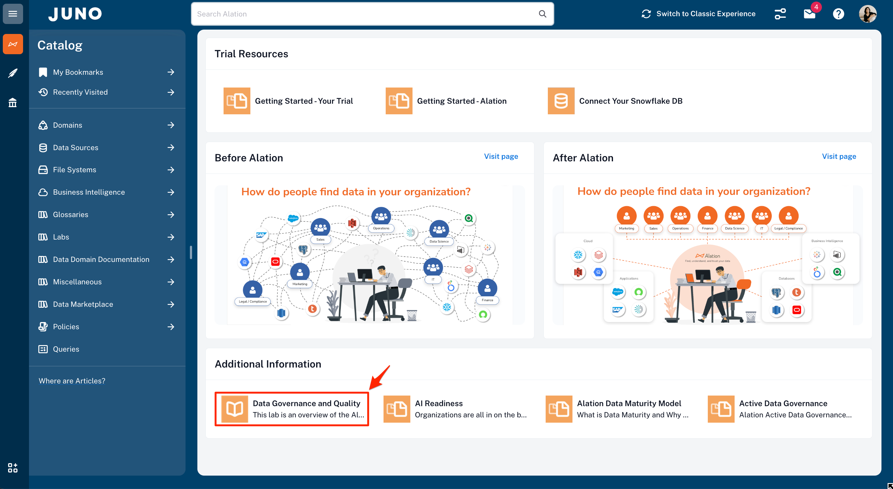3. The Data Governance and Quality Lab.
This is the main page that has the six chapters that will be covered in the lab. Each chapter covers a particular topic.
Let's get started with Chapter 01. Establishing a Governance Framework. Please click on the highlighted chapter link.

Overview
One of the best parts of using the Alation Data Intelligence Platform is that you get a system to drive a data culture and a wealth of knowledge on how to get started. Data Governance doesn't need to be a daunting undertaking. Let Alation help guide you using an active data governance methodology based on people first.
This section is all about how to get started and achieve value quickly from Alation—starting with curating assets to understanding common problems that most data organizations want to solve. Some challenges impact a particular role in an organization, and you will see how all roles benefit from the data intelligence platform solutions.
Note that we will be accessing an Alation-provided Snowflake account for this lab. At the conclusion of the lab, we'll discuss how to set up Alation to manage your own Snowflake data sources.
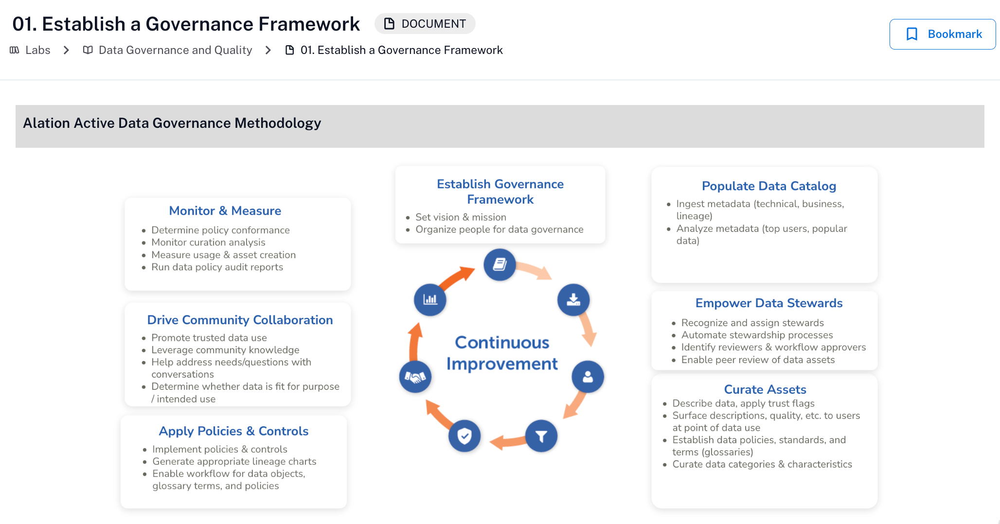 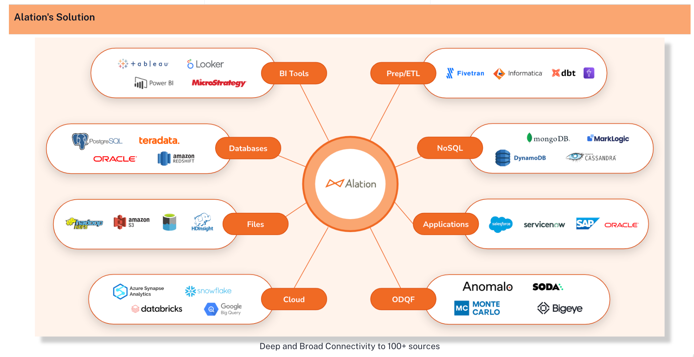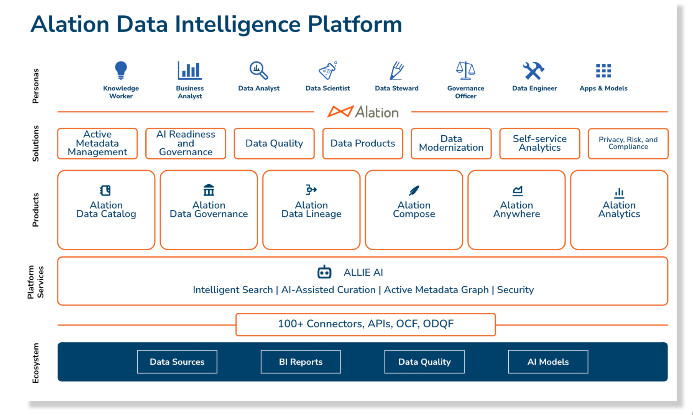
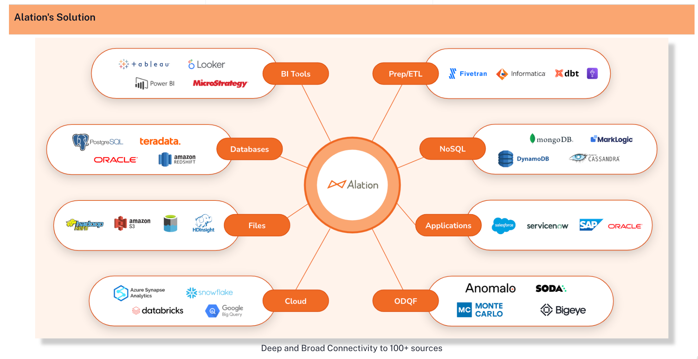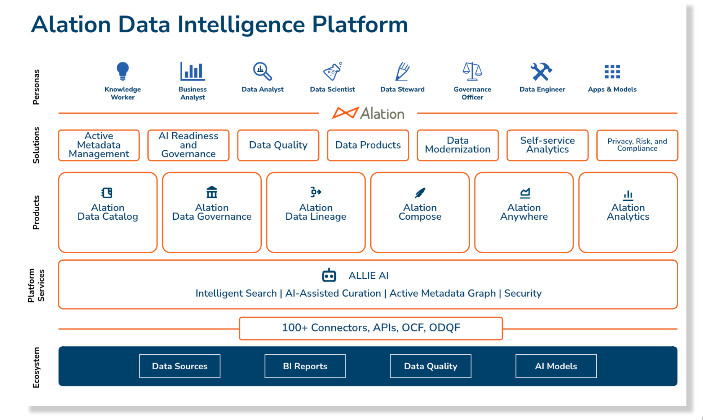
To continue to the next section, click on the link in the highlighted box at the bottom of the page.
Overview
In today's world of data management, it is common to have policies and procedures that range from data quality and retention to personal data protection. If you are an organization that has policies defined, how difficult is it to find them? Often, policies are in file shares or document systems, making them very hard to discover. With Alation, you can store your policies where your data assets live, which makes them extremely easy to find. The other huge benefit is that data assets associated with the policy can be tracked.


| Exercise Guidance |

- Policies are part of Alation Data Governance which also includes Stewardship Workbench, and Workflow. Duplicate your current brower tab, then click on Policies in the left-hand navigation.

- Click on the Personal Data Handling policy group.

- From the list of policies in the group, select the Personal Data Protection Policy.
- Use your browser back arrow to return to the Personal Data Handling policy group. From the list of policies in the group, select the CUST_NAME_MASK policy.

| Benefits |

Policies as living content centralized with data asset information helps everyone in the organization. They consist of both business and data policies.
Now it is time to move on to Search and Discovery!

Overview
Every organization wants to make data-driven decisions. For this to become a reality, all employees must have the ability to quickly search data assets (databases, files, reports, etc.) to discover trusted data they can understand and use.
Alation creates an experience that allows users to expand their world of knowledge through curation and collaboration. A community of technical and non-technical producers and consumers helps drive data literacy, leading to better business decisions and success.


| Exercise Guidance |
- The Alation Search bar is always present on the home page in the header and at the top of the other pages.

- As you start to type what you want to search for, Alation provides suggestions.
- Click on See all results to see what the search has found and to filter the results to find what you are looking for quickly.

- Filters are displayed on the left panel on the search results page. You can narrow your search by object type, such as table, column, BI reports, terms, tags, custom fields, etc. Some object types have subtypes. To see the subtypes, click the arrow next to the subject area and select the desired items from the list.

- After you set the filters, they will be displayed as Applied Filters, and the application will refresh the search results.
- Search provides the trust flags to tell if the result item has been endorsed, has informational messages, or has been deprecated, along with an indicator showing if the item has been bookmarked.

| Benefits |
Search is core to increasing productivity and data literacy. Spend minutes instead of days finding the data that you need.
Now it is time to move on to Compose, Alation's SQL editor!
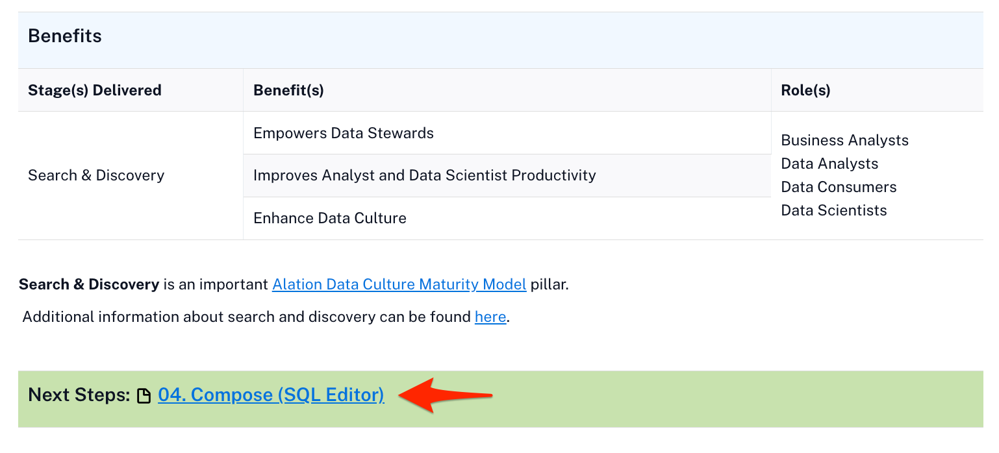
Overview
In addition to the rich cataloging and governance capabilities, the Alation Data Intelligence Platform enables users to interact with data stored in cataloged sources. This capability is called Compose and provides a fully integrated and governed SQL development environment.
Compose is more than your typical SQL editor. Because it is integrated with the active metadata stored in the catalog, the editor's IntelliSense can provide suggestions as you type for tables, columns, joins, etc. Another advantage is that active data governance will show you when an item is deprecated, so you are not using bad data.
Queries can be developed by those who know SQL and shared with others in the organization. No worries if you don't know how to read or write SQL. Queries can be published as forms, allowing the business user to fill out some prompts and get answers to the questions they need answered.
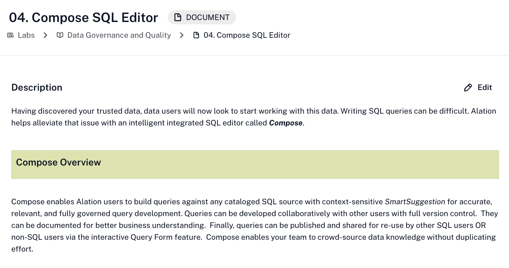
| Exercise Guidance |
Queries and Compose are accessible from several places in the application. The following shows how you can navigate to them.
- When viewing a table, Open with Compose will open Compose with a new query on this table.
- You can click the Queries tab to see all the queries associated with this table.
- Next to each query is an Open in Compose button that will open Compose with that query.

- Another way to find queries is to use the left-hand navigation that provides a Queries selection to launch a search filtered for just queries.
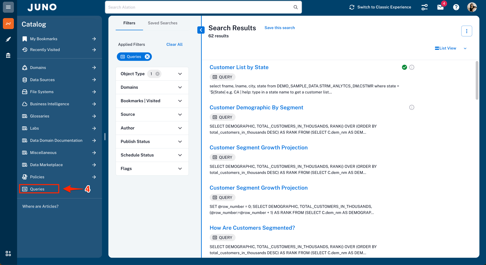
- In the example below, a select statement with that table appears since Compose was launched with Open with Compose from a table view.
- The Connection Settings is where you provide your credentials to connect to the Alation provided Demo Sample Data - data source.

| Benefits |
Compose helps spread data literacy in the organization by allowing users to build and share queries that help answer business questions.
Now it is time to move onto Data Quality!

Overview
Data quality is a critical data management function that helps identify issues based on the rules defined and executed against the data. Thresholds can be set to help guide users on whether using the data is appropriate or not.
Alation provides extensive data quality capabilities through its Open Data Quality Framework. Snowflake provides data quality features through Data Metric Functions (DMFs). The two integrated provide people with the health of the data at the point of consumption. Additional data quality policies provide the details of the data quality rule, thresholds for good, warning, and alert conditions, the data assets processed by the rule, and more.
When the stakes are high, especially when providing data for AI models, data quality is a must!


| Exercise Guidance |
- To review the DMFs currently created, click on Data Quality Processor in the left-hand navigation.

- Click on arrow next to Snowflake DMFs to expand the list.
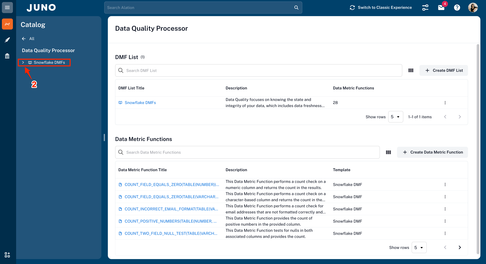
- Enter "email" to search the Data Metrics Functions.
- From the search results, click on COUNT_INCORRECT_EMAIL_FORMAT.

- Review the information about the COUNT_INCORRECT_EMAIL_FORMAT DMF. The key attributes are highlighted in the red boxes.

- Search for customer.
- Select the Customer (CSTMR) table.

- Notice the alert icon next to the Data Health tab. Click on it.

- Find the columns with alerts and locate the email column.
- Click on the COUNT_INCORRECT_EMAIL_FORMAT rule.

- As you review the content of the rule, how can you tell it implements a DMF? Hint: Check out hightlighted red boxes.
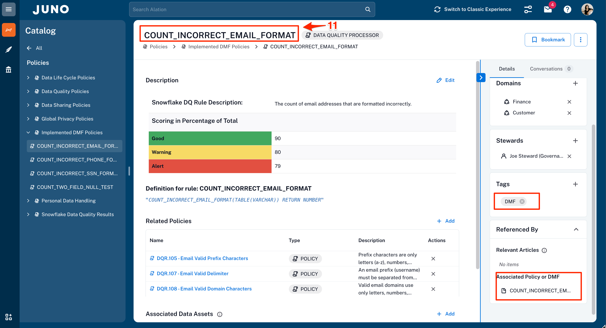
| Benefits |
An integrated data quality solution that makes consumers aware of the data health at the point of consumption is priceless! Trust is the most critical factor for your data, especially when taking advantage of it with AI.
Time to wrap this up with a quick Summary!

You did it! In this short period, you have seen how Alation and Snowflake work together bringing the pillars of Horizon to life for data governance and data quality. Whether your working on data mondernization or AI readiness, Snowflake and Alation are the perfect combination.
 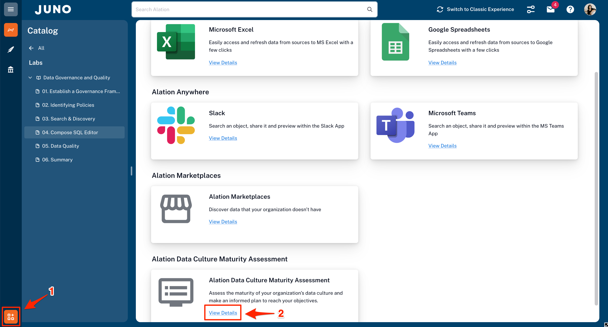
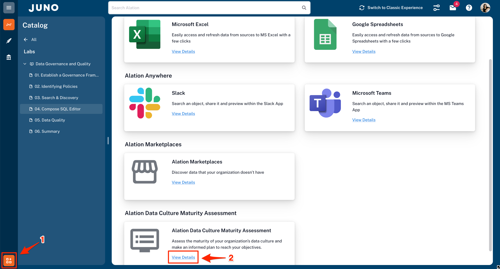
- Throughout the trial, self-guided Self-service Analytics, Data Governance, and Compose SQL Editor demos will be launched. A new one each day will display. Visit Help Center is located under the ? in the top right of the webpage should you need any help about the features you are trying out.
- If you would like to explore some of your own Snowflake databases, click on this link to see how to connect your own Snowflake data sources.
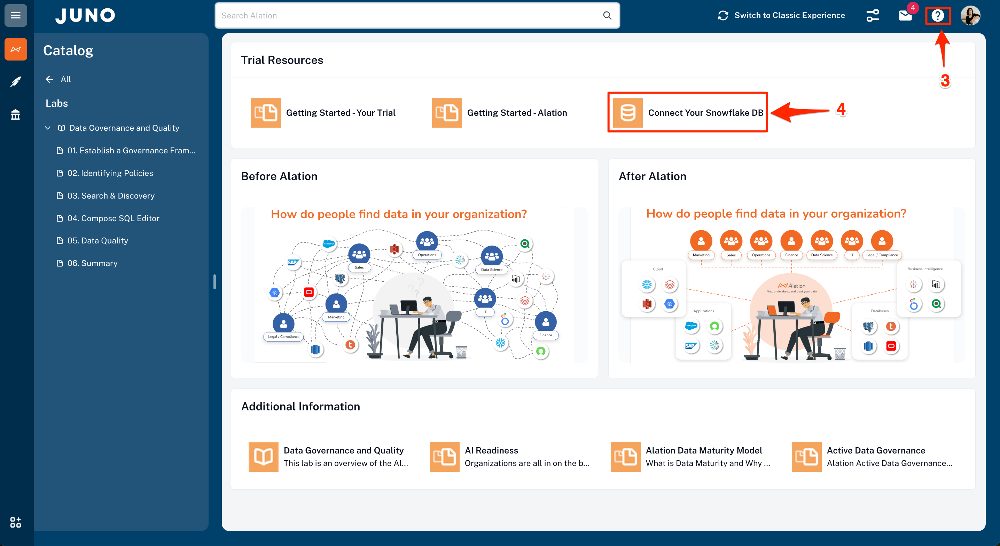
- For additional guided demos and product information, please go to Alation.com.

Last but not least, please check your email for continued guidance and tips throughout your trial.
What You Learned
- How to get your data AI-ready with Snowflake Horizon and Alation's Data Quality Processor
- How to utilize a governance framework that promotes reducing risk while enabling broader use of data
- How to easily find data in the organization through Alation's Intelligent Search, increasing productivity through self-service analytics
- How to curate and classify data to guide users to make better business decisions with trusted data compliantly
- How to create policies and controls that are front and center to enable compliance
- How to use Compose to create queries guided by current metadata that extend to interactive forms for business users